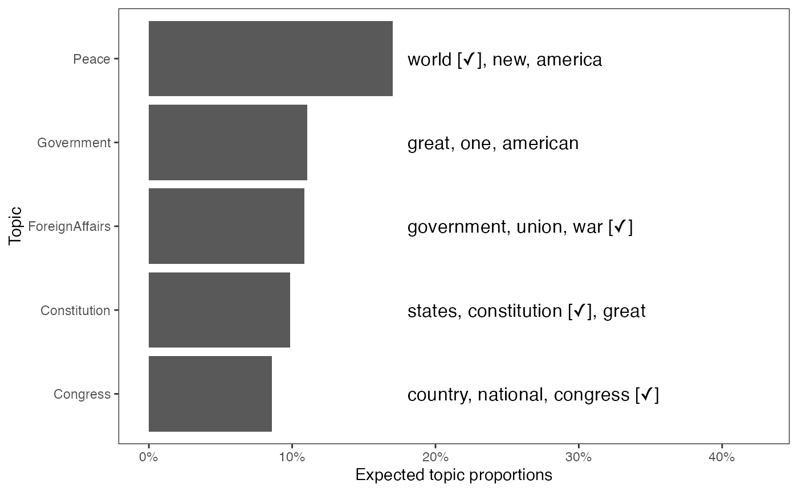
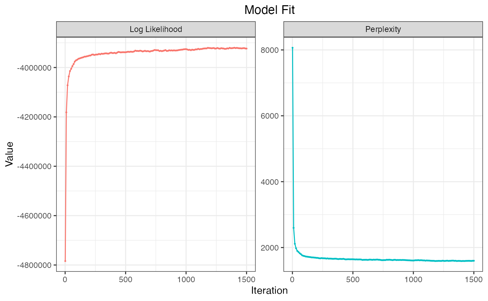
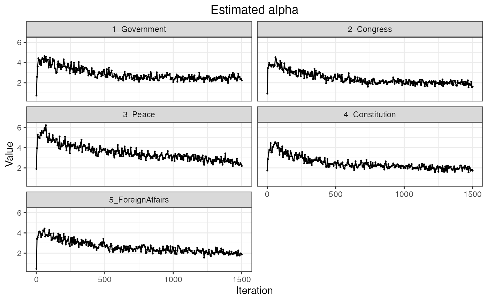
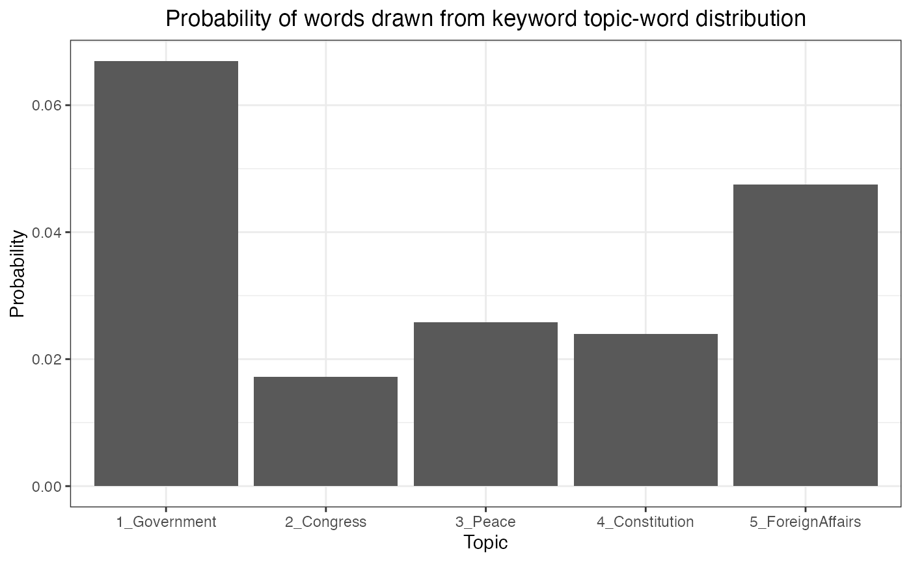

Please read Preparation for the reading of documents and creating a list of keywords. We use the US Presidential inaugural address data we prapared (documents and keywords).
We pass the output of the keyATM_read function and
keywords to the keyATM function.
Additionally, we need to specify the number of topics without
keywords (the no_keyword_topics argument) and model. Since
this example does not use covariates or time stamps, base
is the appropriate model.
To guarantee the replicability, we recommend to set the random seed
in the option argument (see here
for other options). The default number of iterations is 1,500.
out <- keyATM(
docs = keyATM_docs, # text input
no_keyword_topics = 5, # number of topics without keywords
keywords = keywords, # keywords
model = "base", # select the model
options = list(seed = 250)
)The default number of iterations is 1500. Please check
this page for available options.
You can resume the iteration by specifying
the resume argument.
Once you fit the model, you can save the model with the
save() function for replication. We strongly recommend to
save the fitted model.
save(out, file = "SAVENAME.rds")To load the model, you can use readRDS() function.
out <- readRDS(file = "SAVENAME.rds")There are two main quantities of interest in topic models. First, topic-word distribution represents the relative frequency of words for each topics, characterizing the topic content. Second, document-topic distribution represents the proportions of topics for each document, reflecting the main themes of the document and often called topic prevalence.
Since typical corpus contains several thousands of unique terms, we usually scrutinize ten to fifteen words that have high probabilities in a given topic, which is called top words of a topic.
The top_words() function returns a table of top words
for each of estimated topics. Keywords assigned to a keyword topic are
suffixed with a check mark. Keywords from another keyword topic are
labeled with the topic id of that category.
In the table below, “law”, “laws”, and “executive” are keywords of the Government topic, while “peace” appears in top words of the Other_3 topic, it is a keyword of the peace topic.
top_words(out)## 1_Government 2_Congress 3_Peace 4_Constitution 5_ForeignAffairs
## 1 law [✓] great world [✓] states public
## 2 laws [✓] justice new government union
## 3 state congress [✓] freedom [✓] constitution [✓] war [✓]
## 4 executive [✓] united america power nations
## 5 policy service let citizens foreign [✓]
## 6 whole party [✓] peace [✓] rights [✓] principles
## 7 american force life duty duties
## 8 however office time interests good
## 9 spirit means work united just
## 10 full prosperity american powers interest
## Other_1 Other_2 Other_3 Other_4 Other_5
## 1 years national country nation people
## 2 fellow political peace [3] men government
## 3 purpose administration time hope every
## 4 president system support first one
## 5 spirit confidence secure progress now
## 6 day federal important man made
## 7 yet liberty since power right
## 8 strength whose respect country well
## 9 come take future change many
## 10 believe given resources find muchResearchers can also examine how likely each topic appears in the
corpus with plot_topicprop(). This function creates a
figure that shows the expected proportions of the corpus belonging to
each estimated topic along with the top three words associated with the
topic. The figure below demonstrates that the ``Peace’’ topic is most
likely to appear in the corpus.
plot_topicprop(out, show_topic = 1:5)
To explore documents that are highly associated with each topic, the
top_docs() function returns a table of document indexes in
which a topic has high proportion.
The table below indicates, for example, that the ninth document in the corpus has the highest proportion of the Government topic among all other documents.
top_docs(out)## 1_Government 2_Congress 3_Peace 4_Constitution 5_ForeignAffairs Other_1
## 1 9 31 52 2 5 46
## 2 14 35 47 15 10 47
## 3 8 34 53 12 11 54
## 4 26 32 58 11 6 48
## 5 16 36 46 14 3 53
## 6 13 29 40 18 15 49
## 7 19 28 57 19 7 50
## 8 12 41 51 9 8 56
## 9 28 33 50 23 20 57
## 10 36 30 54 17 16 43
## Other_2 Other_3 Other_4 Other_5
## 1 1 28 45 19
## 2 31 8 44 21
## 3 27 6 38 2
## 4 11 31 58 4
## 5 36 35 51 20
## 6 33 22 30 1
## 7 23 23 55 53
## 8 17 10 39 32
## 9 37 9 46 45
## 10 25 16 52 58Researchers may want to obtain the entire document-topic distribution
and topic-word distribution. The output of the keyATM()
function contains both quantities.
out$theta # Document-topic distribution
out$phi # Topic-word distributionThe keyATM provides other functions to diagnose and explore the fitted model. First, it is important to check the model fitting. If the model is working as expected, we would observe an increase trend for the log-likelihood and an decrease trend for the perplexity.
Also the fluctuation of these values get smaller as iteration
increases. The plot_modelfit() function visualizes the
within sample log-likelihood and perplexity and the created figure can
be saved with the save_fig() function.
fig_modelfit <- plot_modelfit(out)
fig_modelfit
save_fig(fig_modelfit, "figures/base_modelfit.pdf", width = 7, height = 5)Furthermore, the keyATM can visualize \(\boldsymbol{\alpha}\), the prior for the document-topic distribution, and \(\boldsymbol{\pi}\), the probability that each topic uses keyword topic-word distribution. Values of these parameters should also stabilize over time.
plot_alpha(out)
plot_pi(out)
We can use the save_fig() function for both the
plot_alpha() and the plot_pi() functions.